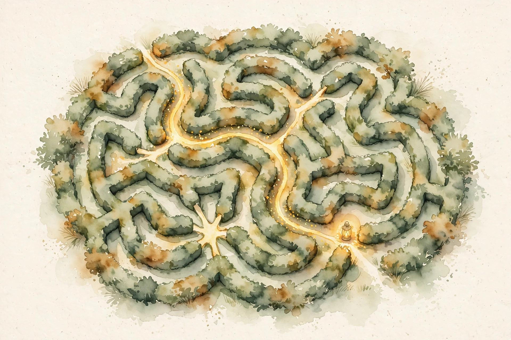

Companion · narrated from the lesson document
An autoregressive model predicts one token at a time. A direct answer is one hard prediction. A trace turns it into a sequence of smaller predictions. This companion walks the full arc of Unit 15: reasoning traces, RLVR with verifiable rewards, reward validity, MDPs, Bellman equations, value and policy iteration, model learning, exploration, and the continuous-state methods.
From the lesson The idea, and every number beside it, comes from the cited section of lesson-15-reasoning-rl-foundations.md. The phrasing is the companion's.
Illustration Invented by the companion: an analogy, a toy with made-up values, or a what-if. Never lecture content.
companion Companion voice: the idea above the tag is from the lesson. The generalization below it is the companion's.
Provenance: the lesson notes that a Lecture 16 transcript covers RL basics (SRC-02), but only its header was inspected. Content was not read in depth. No lecture video is named. The lesson's Source mapping states that SRC-01 chapters 18 and 19 (PDF pages 221 to 243) were read in full on 2026-10-06. "Reward validity" and "source/reward confounding" are standard-background bridges on the notes' own verifier discussion, labeled as such, as is exploration theory beyond the learn-then-plan loop. The o1 and DeepSeek-R1 scaling plots are source-reported empirical plots, not numbers reproduced here. One honesty note: the lesson's fitted-value-iteration numbers (θ = [1.0033, 0.8550], residual 0.0044) are arithmetically inconsistent. Independent least squares gives θ = [1.015, 0.855] with residual norm 0.0367. Both values are shown. Leaf rows carry SOURCE ATTRIBUTION PENDING until the RUN 6 pass.

Section 1 · SL-01 · C01
From the lessonSL-01 §Source anchor, §Mental model
A chain-of-thought (CoT) prompt asks the model to write intermediate steps before the final answer. The notes' example: Roger starts with 5 tennis balls and buys 2 cans with 3 balls each. The trace is "2 x 3 = 6, 5 + 6 = 11", the answer is a = 11. An autoregressive model predicts one token at a time. A direct answer is one hard prediction. A trace turns it into a sequence of smaller predictions. The extra tokens buy two things: more compute (more time to think) and more memory (a place to log intermediate results). Later tokens condition on earlier partial computations.
From the lessonSL-01 §Few-shot and zero-shot CoT, §Correctness checks
Few-shot CoT: each demonstration is (x, z, a): input, trace, answer [Wei et al., 2022]. Zero-shot CoT: no demonstrations, append "Let us think step by step" [Kojima et al., 2022]. The trace must precede the answer: a trace after the answer cannot change the prediction it explains. Truncate the trace and check the answer changes. The failure case: a trace that reads well but does not drive the answer. The model writes plausible steps then ignores them.
A trace turns one hard prediction into a sequence of smaller predictions.
Section 2 · SL-02 · C02
From the lessonSL-02 §Source anchor, §The formulation
Prompting elicits traces. RLVR trains them. The problem: step-by-step supervision is expensive. The opening: in many domains the final answer is checkable automatically. Math has a known answer. Code has unit tests. Theorems have a proof checker. A verifier produces a scalar reward R(x, y) in [0, 1]. Example: R(x, y) = 1 if the extracted final answer is correct, 0 otherwise, with format penalties as needed. View autoregressive generation as a finite-horizon MDP: at token position t the state is the prefix s_t = (x, y_{<t}), the action is the next token, the transition is deterministic, the episode ends at end-of-sequence or a length limit, and the verifier gives the terminal reward. All intermediate rewards are zero.
The objective: J_R(θ) = E_{x∼D, y∼π_θ(.|x)}[R(x, y)] (18.1). The regularized objective: J_β(θ) = J_R(θ) − β E_{x∼D}[D_KL(π_θ(.|x) || π_ref(.|x))] (18.2). π_ref is usually the initial SFT or instruction-tuned model. The KL term stops the policy from drifting far from a capable language model while the verifier reward pushes it toward completions that solve the task.
From the lessonSL-02 §The two scaling axes
Two empirical patterns, source-reported, not reproduced as numbers here. OpenAI's o1 report: reasoning accuracy improves with more RL train-time compute and with more test-time thinking compute [OpenAI, 2024]. DeepSeek-R1: DeepSeek-R1-Zero improves during RLVR training and produces longer traces as training progresses [DeepSeek-AI, 2025]. Figure 18.1 plots AIME pass@1 against training steps and average response length rising with the accuracy curve.
In many domains the final answer is checkable automatically. That check is the reward.
Section 3 · SL-03 · C03
From the lessonSL-03 §Source anchor, §Mental model, §The KL penalty as a guardrail
The term "reward validity" is not in the notes. The content is standard background on the notes' verifier discussion. The verifier defines the reward. The model optimizes the reward. If the verifier and the true task goal differ, the model optimizes the difference. Three validity checks: (1) the verifier must test the real property (answer correctness, tests passing), not a proxy (answer present, tests exist). (2) The verifier must be hard to game: unit tests with hidden cases beat tests the model can memorize. (3) The reward range must be sane: the notes use R(x, y) in [0, 1] plus format penalties, so no single format quirk dominates the correctness signal. The KL term in (18.2) is the notes' own guardrail: it penalizes drift from π_ref. The penalty does not fix a broken verifier. It limits how far the model travels to exploit it.
From the lessonSL-03 §Failure case
The verifier accepts any answer in the right format. RLVR then trains a model that writes long confident traces and wrong answers. The reward curve looks good. The task metric does not.
Illustration The GRPO advantage machine. The lesson's toy: rewards R = [1, 0, 0, 1] across a group of 4 completions, ε = 1e-8. The toy computes Â_i = (R_i − R̄)/(s_R + ε) with the population s_R, matching the lesson's keys.
Completions above the group mean get positive advantage, below it negative. The group is its own baseline.
Section 4 · SL-04 · C04
From the lessonSL-04 §Source anchor, §Dynamics, §Policy and value
A Markov decision process is a tuple (S, A, {P_sa}, γ, R). S: states. A: actions. P_sa: transition probabilities. γ in [0, 1): discount factor. R: the reward function. The total payoff along a trajectory: R(s₀, a₀) + γR(s₁, a₁) + γ²R(s₂, a₂) + ... The goal: choose actions over time to maximize the expected total payoff. The discount makes early rewards worth more than late ones. A policy π: S → A maps states to actions. The value function V^π(s) is the expected discounted return starting from s and following π.
| Two states: A (start), B (goal), one action, γ = 0.9 | Value |
|---|---|
| V(B): 1/(1 − 0.9) | 10 |
| V(A): 0 + 0.9 × 10 | 9 |
From the lessonSL-04 §Failure case
The Markov property fails: the next state depends on history, not just (s, a). Then P_sa is the wrong object and Bellman equations do not hold.
Section 5 · SL-05 · C05
From the lessonSL-05 §Source anchor, §The optimal value function
V^π(s) = R(s) + γ Σ_{s'} P_{sπ(s)}(s') V^π(s'). Immediate reward plus the discounted expected value of wherever you land next. In a finite-state MDP this is |S| linear equations in |S| unknowns: solvable directly. V*(s) = max_π V^π(s) (19.1), the best achievable return from s. Its Bellman equation: V*(s) = R(s) + max_{a} γ Σ_{s'} P_{sa}(s') V*(s') (19.2). The optimal policy reads off from V*: π*(s) = argmax_a Σ_{s'} P_{sa}(s') V*(s') (19.3). The notes state the key fact: π* is optimal for every state at once. One policy attains the max in (19.1) for all s. The starting state does not change which policy is best.
From the lessonSL-05 §Computed example
Continue the two-state toy. Bellman at B: V(B) = 1 + 0.9V(B), so V(B) = 10. At A: V(A) = 0 + 0.9V(B) = 9. Add a second action at A: stay in A with reward 0. Its value: V_stay(A) = 0 + 0.9V_stay(A) = 0. The max in (19.2) picks the move to B. So V*(A) = 9, π*(A) = move.
π* is optimal for every state at once. The starting state does not change which policy is best.
Section 6 · SL-06 · C06
From the lessonSL-06 §Source anchor, §Value iteration, §Policy iteration, §Which is better
Value iteration: initialize V(s) = 0 for all s, repeat V(s) := R(s) + max_a γ Σ_{s'} P_{sa}(s') V(s') (19.4). Synchronous (all new values, then overwrite) and asynchronous (one state at a time) both converge to V*. Policy iteration: initialize π at random, repeat (a) evaluate V := V^π, usually by solving the |S| linear Bellman equations, (b) improve π(s) := argmax_a Σ_{s'} P_{sa}(s') V(s'). After finitely many iterations π reaches π*. The notes' footnote: policy iteration with an exact linear solver reaches V* exactly in finite time, while value iteration always keeps some nonzero error. No universal winner. For small MDPs, policy iteration is often fast. For large state spaces, solving the linear system is expensive, and value iteration is preferred. Section 19.5 shows the connection: policy iteration with k evaluation sweeps reduces to value iteration at k = 1. Value iteration interleaves one evaluation sweep with one improvement step.
Illustration The value-iteration stepper. The lesson's two-state toy, γ = 0.9, synchronous updates from V = 0. Press "sweep" to run one Bellman update and watch the error shrink by 0.9.
Value iteration interleaves one evaluation sweep with one improvement step. Policy iteration does full evaluation between improvements.
Section 7 · SL-07 · C07
From the lessonSL-07 §Source anchor, §Maximum likelihood from counts, §The learn-then-plan loop
P_sa(s') = (times action a in state s led to s') / (times action a was taken in state s) (19.5). If the denominator is zero, estimate the uniform distribution 1/|S|. Keep the counts, not just the ratios: new experience accumulates by adding to numerator and denominator. Estimate R(s) as the average reward observed in s. The learn-then-plan loop: (1) initialize π at random. (2) repeat: (a) run π for some trials, (b) update P_sa and R estimates from the accumulated experience, (c) run value iteration on the estimated model to get V, (d) set π to the greedy policy for V. Speedup: warm-start value iteration from the previous V instead of from zero.
| Count data in state s, action a | P̂ |
|---|---|
| 10 trials: 7 to s1, 3 to s2 | [0.7, 0.3] |
| 10 more trials: 5 and 5 | [0.6, 0.4] |
| Unvisited (s, a), |S| = 2 | [0.5, 0.5] |
Keep the counts, not just the ratios. New experience accumulates by adding to numerator and denominator.
Section 8 · SL-08 · C08
From the lessonSL-08 §Source anchor, §The problem the loop hides, §What fixes it
The notes teach the learn-then-plan loop but do not name an exploration strategy. This section is standard background on the loop's implied problem. Step (a) executes the current π to collect data. The model is estimated only on visited (s, a) pairs. The greedy update then picks actions that look good under the estimated model. A (s, a) pair never tried keeps its 0/0 fallback, so the planner never discovers it is good. This is the exploration trap: the data distribution follows the policy, and the policy follows the data. Standard fixes: (1) ε-greedy: with probability ε take a random action, so every pair is visited infinitely often in the limit. (2) Optimism: initialize estimates optimistically so untried actions look attractive. (3) In the RLVR setting, sampling temperature plays the exploration role: higher temperature samples more diverse completions per prompt.
Section 9 · SL-09 · C09
From the lessonSL-09 §Source anchor, §Why this breaks the tabular methods
Finite states do not fit a car. A car state is (x, y, θ, ẋ, ẏ, θ̇): S = R⁶. An inverted pendulum is R⁴. A helicopter is 12d: position, roll, pitch, yaw, and their velocities. Value iteration stores one value per state. With a continuum of states there are infinitely many. The Bellman sums become integrals. The algorithms of SL-06 need a finite representation of V. Actions are usually low dimensional even when states are not: the car has a 6d state but a 2d action (steering, velocity).
Section 10 · SL-10 · C10
From the lessonSL-10 §Source anchor, §Downside 1, §Downside 2
Lay a grid over the state space. Each cell is one discrete state s̄. Solve the discrete MDP, and at runtime map the true s to its cell and execute π*(s̄). Downside 1: the grid represents V* as constant inside each cell, a staircase with no smoothing and no generalization across cells. Downside 2: the curse of dimensionality. Discretize each of d dimensions into k values: k^d discrete states. The notes' example: d = 10, k = 100 gives 100^10 = 1e20 states, far beyond any computer. Rule of thumb from the notes: discretization works well for 1d and 2d, often up to 4d with care, rarely above 6d, almost never higher.
100^10 = 1e20 states. The grid that fits in memory has cells so wide the controller chatters.
Section 11 · SL-11 · C11
From the lessonSL-11 §Source anchor, §Fitted value iteration, §Convergence boundary
Approximate V* directly as a parametric function, no grid. Represent V(s) = θᵀφ(s). Repeat: (1) sample n states. (2) for each state and action, draw k next states and estimate q(a) = (1/k) Σ_j (R(sⁱ) + γV(s'_j)). (3) set yⁱ = max_a q(a). (4) fit θ by ordinary least squares of V against the Bellman targets. The simulator: a physics simulator, or a learned linear model s_{t+1} = As_t + Ba_t (19.6), or a stochastic version with Gaussian noise. If the noise is small, use E[V(s')] ≈ V(E[s']) (19.10-19.11): drop the noise, use one deterministic step. Unlike tabular value iteration, fitted value iteration has no convergence guarantee. In practice it often converges approximately and works well. The notes state this explicitly.
| One dimension, V(s) = θ₀ + θ₁s, targets y = [1.0, 1.9, 2.71] at s = [0, 1, 2] | Value |
|---|---|
| Lesson's reported θ | [1.0033, 0.8550] |
| Independent least squares θ companion | [1.015, 0.855] |
| Residual norm at the LS fit companion | 0.0367 (lesson: 0.0044) |
Unlike tabular value iteration, fitted value iteration has no convergence guarantee.
Section 12 · SL-12 · C12
From the lessonSL-12 §Source anchor, §The two confounds, §What breaks the loop
The term is not in the notes. This is a standard-background synthesis of two note-sourced facts: the verifier defines the RLVR reward (18.2), and the model in 19.3 is estimated from the data the policy itself collects. First, reward confounding: the verifier is a stand-in for the true task goal. Any gap between them is a confound the optimizer will find. Second, source confounding: in the learn-then-plan loop the transition model is estimated from trajectories of the current policy. A policy that avoids a region leaves the model unestimated there, and the planner cannot see what it cannot model. The estimate and the policy confound each other. What breaks the loop: independent data. Collect transitions with a policy designed for coverage, not for reward. The notes' GRPO samples G completions per prompt from the old policy: if the old policy collapsed to one answer shape, the group has no variance and the advantage divides by a tiny s_R. Exploration keeps s_R healthy.
From the lessonSL-12 §Failure case
RLVR on a verifier the model helped write: the model generates its own unit tests, then optimizes against them. Source and reward collapse into one. The reported reward is meaningless.
Section 13 · Synthesis
From the lessonSL-01 to SL-12
The arc, end to end. A chain-of-thought trace turns one hard prediction into a sequence of smaller ones, buying compute and memory (SL-01). RLVR trains the traces with verifier rewards on a token MDP, KL-regularized against a reference model (SL-02). The verifier is the objective: validity checks and KL monitoring keep the reward honest (SL-03). The classical foundation: MDPs, the discounted payoff, and the two-state toy with V(B) = 10 and V(A) = 9 (SL-04). Bellman equations for V^π and V*, with π* optimal for every state at once (SL-05). Value iteration and policy iteration as one family, the error shrinking by γ per sweep (SL-06). Models estimated from counts, keeping the counts (SL-07). The exploration trap the loop hides (SL-08). Continuous states break the tabular methods (SL-09). Discretization hits the curse: 100^10 = 1e20 states (SL-10). Fitted value iteration scales without a convergence guarantee (SL-11). Source and reward confounding close the loop: the data source and the objective can corrupt each other (SL-12).
From the lesson§Research reading, §Role bridges
Where the unit points next, in the lesson's own forward links. Read SRC-01 chapters 18 and 19 in full, Wei et al. [2022] sections 1-3, Schulman et al. [2017] sections 1-4. The extension: implement fitted value iteration on a 1d continuous toy and compare a linear versus a quadratic feature map. The falsifiable claim: the linear map cannot represent the true quadratic V*, so its greedy policy underperforms the quadratic map's policy by a measured margin. For the ML engineer: the verifier is the training objective in RLVR. Audit it like a loss function, not like a test. For the research engineer: value iteration is the exact baseline every approximate RL method must beat on small MDPs. Run it first. For the LLM engineer: the KL penalty in (18.2) is the lever between capability preservation and reward exploitation. Track it during training.
Wisdom index
Each nugget states the idea in plain words, why it matters, and the transferable principle. Every one is anchored to its lesson section.